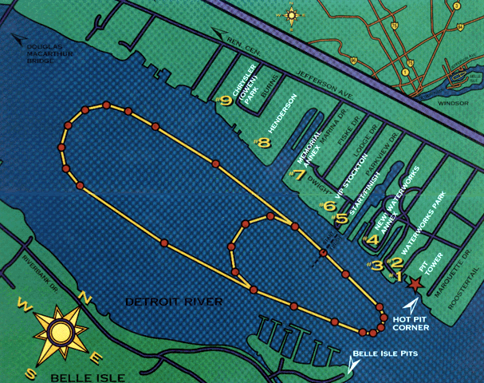

Return to the Ticket Info page.
Return to the Top THUNDERFEST page. All contents Copyright © 1997 Spirit of Detroit THUNDERFEST, except where noted. All Rights Reserved. Web page created by Brian Reed.
All contents Copyright © 1997 Spirit of Detroit THUNDERFEST, except where noted. All Rights Reserved.
Web page created by Brian Reed.